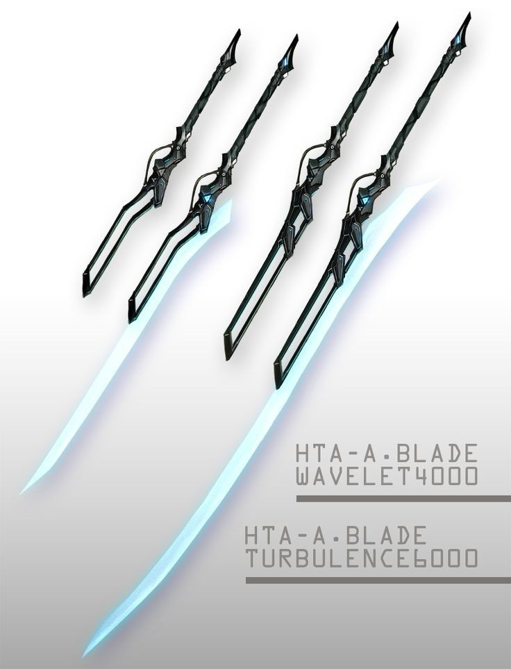
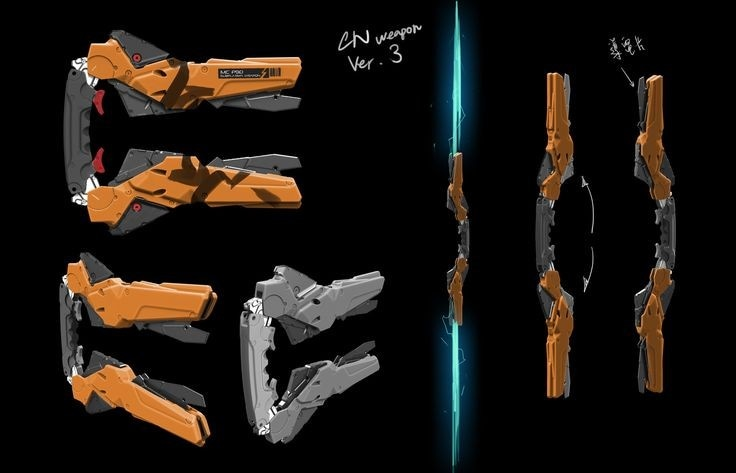
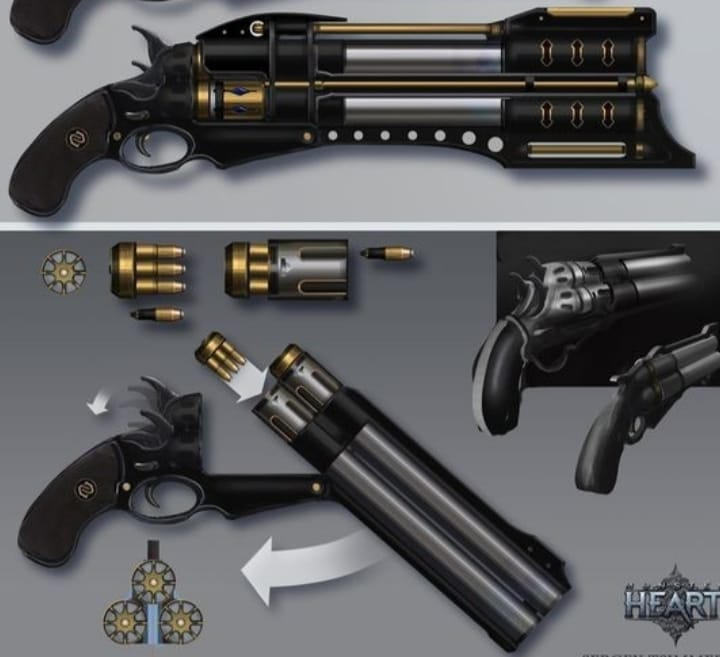
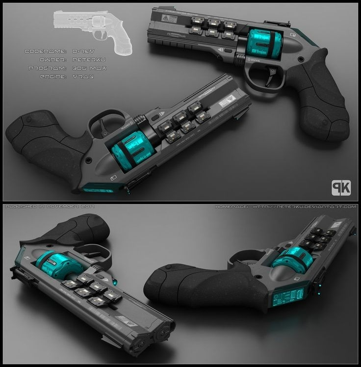
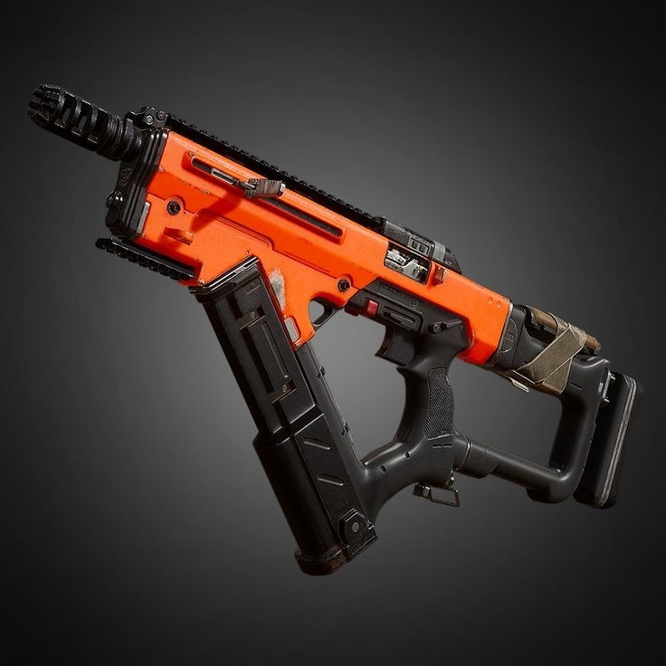
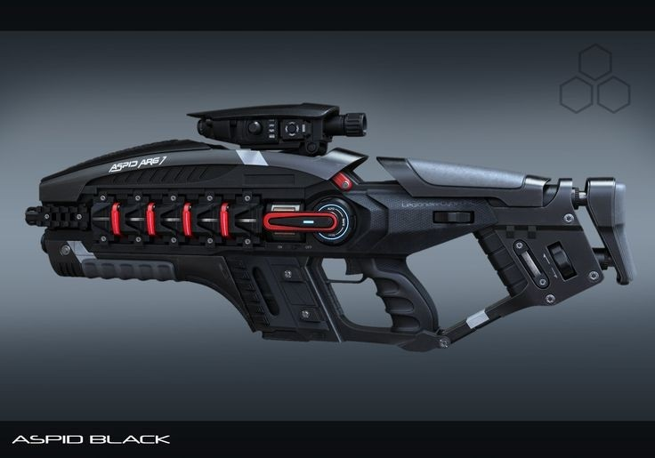

LOJA DE ARMAS
Lâmina de luz sólida [8k]-Estoque:25
• Uma espada composta por um cabo possui um mecanismo tecnológico, a partir do mesmo, é projetada uma lâmina de luz sólida com uma temperatura de 1000 ºc.

Sabre plasmático [25K]-Estoque:25
• Uma arma semelhante a um bastão retrátil, que possui a habilidade d projetar lâminas de plasma de 60cm em suas extremidades, tendo uma temperatura de 1500 ⁰c.

3gun [50K]-Estoque:16
• Uma pistola com 3 canos, que podem disparar tanto simultânea quanto separadamente. Seus disparos possuem uma velocidade de mach 2 e causam uma pequena explosão ao atingir o alvo, a arma comporta um total de 24 balas sendo 8 em cada cano. / Munição [100: 24 balas]

Colt Zero [20k]-Estoque:20
• Uma arma tecnologicamente avançada, tendo uma pequena tela que diz exatamente quanta munição a mesma tem além de informar de qualquer problema inferno na mesma com precisão, além disso, as balas da mesma liberam uma forte rajada elétrica assim que aceitam o alvo, podendo deixar tanto ele, quanto qualquer um que esteja a até 2 metros do mesmo atordoados por 1 tornos e com graves queimaduras pelo corpo. Seus disparos tem uma velocidade de mach 3 e a arma comporta 8 tortos tiros. / Munição [100: 16 balas]

DW-20 Ripper [25k]-Estoque:15
• Uma metralhadora automática, capaz de atirar 05 balas por segundo, ou uma por vez caso mude a configuração através de uma alavanca próxima ao gatilho uma curiosidade é o fato da mesma não armazenar suas balas de forma física, mas sim em forma de energia, as materializando no momento do disparo. Suas balas possuem uma velocidade de mach 5. / Bateria/munição [200: 600 balas]

Red Devil [100k]-Estoque:10
• Um fuzil que dispara pura radiação infravermelho em forma de projéteis, em uma temperatura de 10k ºc, podendo ultrapassar praticamente qualquer defesa física, por serem pura radiação, os disparos viajam na velocidade da luz, sendo literalmente impossível ver os mesmos, pois eles chegaram em seu alvo literalmente no momento em que a luz chegar nos olhos do mesmo. / Bateria [05k: 20 disparos]
